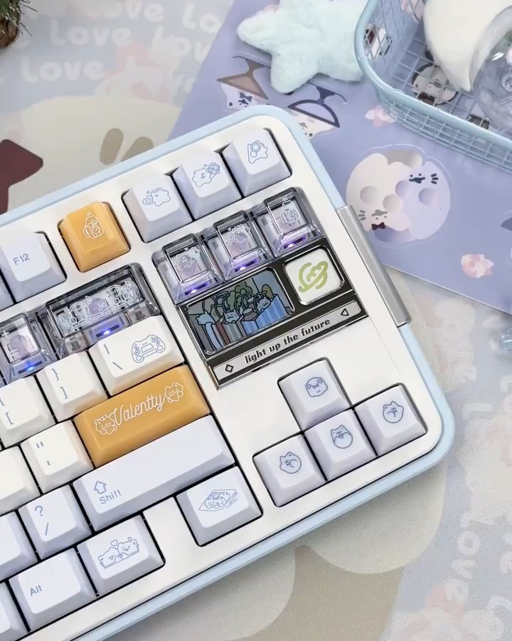
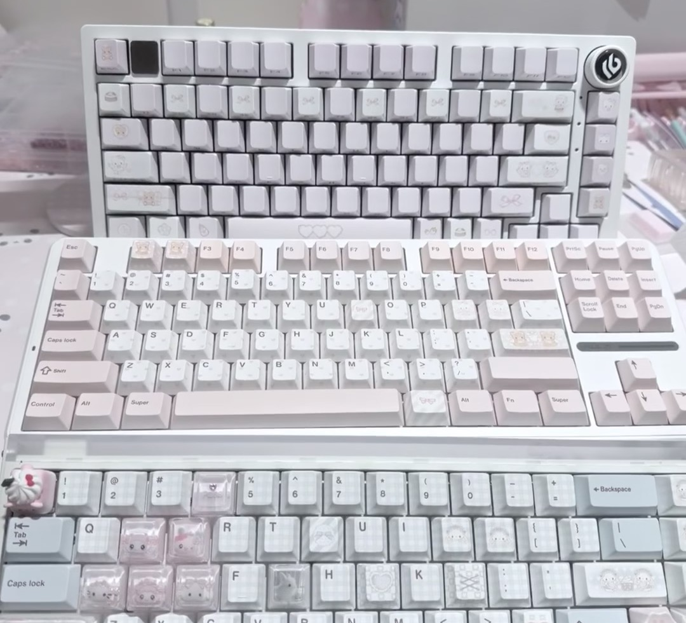
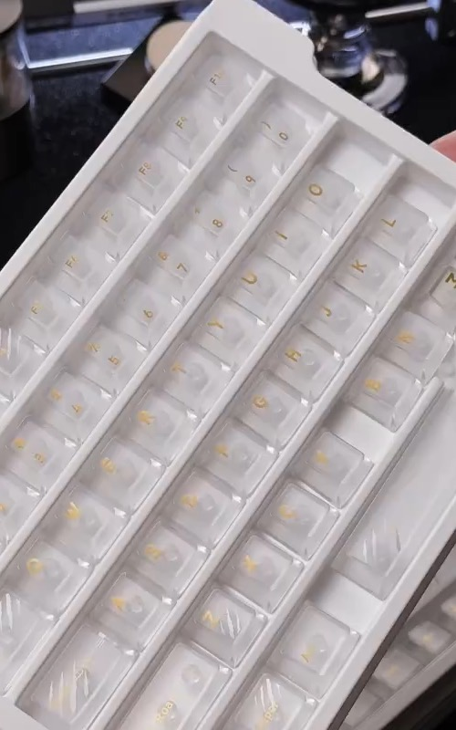
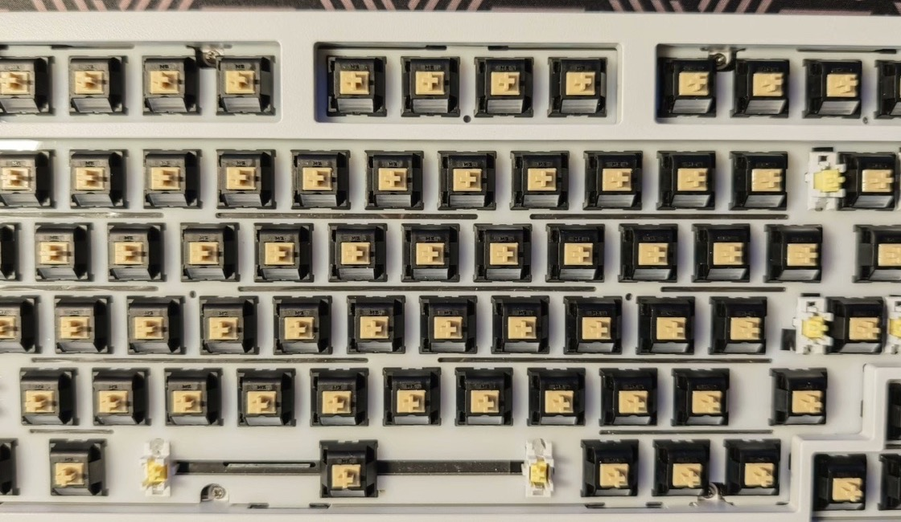

Signature reference
Signature reference
Butterfly Lilac Build
Soft lilac keycaps, black contrast accents, butterfly novelty placement, and a clean display-board mood.
Quote based Ask for this directionBuild references and desk setup ideas
These are consultation references, not mass-stock keyboard listings. Send us the look you like and ForgeKeys AU can adapt the layout, switches, sound, keycaps, desk accessories, availability, and budget before quoting.
Signature reference
Soft lilac keycaps, black contrast accents, butterfly novelty placement, and a clean display-board mood.
Quote based Ask for this direction
Desk setupLight keyboard base, soft desk mat direction, accent keycaps, and matching workspace accessories.
Quote based Ask for this direction
Soft themeA light setup direction for customers who want a clean desk look with soft novelty accents.
Quote based Request similar styling
Keycap kitA refined clear keycap direction for customers who want a premium light-catching look.
Quote based Ask for similar keycaps Bold theme
Bold theme
Black case direction, green accents, novelty placement, and a sharp gaming or desk-display look.
Quote based Ask for this look
Build serviceStart with the keyboard layout, then match switches, stabilisers, keycaps, tuning, and budget.
Quote based Plan a build Keycap styling
Keycap styling
A lilac, cream, and black novelty direction for customers who want a soft collector-style keycap kit.
Quote based Ask for this kitShown as styling references only. Third-party keycap sets and components may be sourced as genuine parts after quote approval, but ForgeKeys AU does not reproduce third-party artwork or present these builds as official collaborations.
Keep this section for later ForgeKeys boards. For now, customers can reserve interest or ask us to style an existing compatible board.
Compact aluminium kit slot for a later ForgeKeys drop.
Coming laterProductivity layout with function row and premium finish options.
Coming laterLarger aluminium board for office, gaming, and collector builds.
Coming later